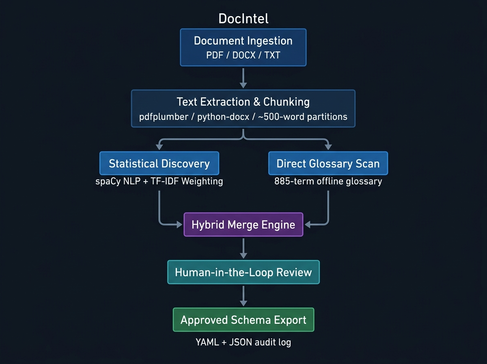
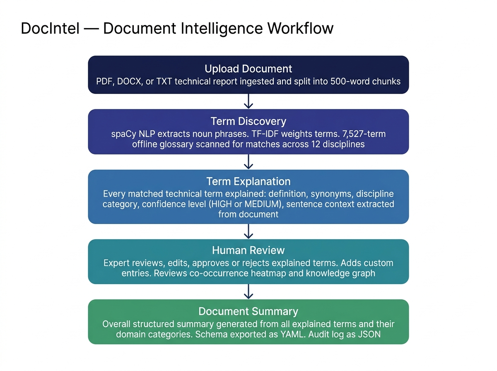
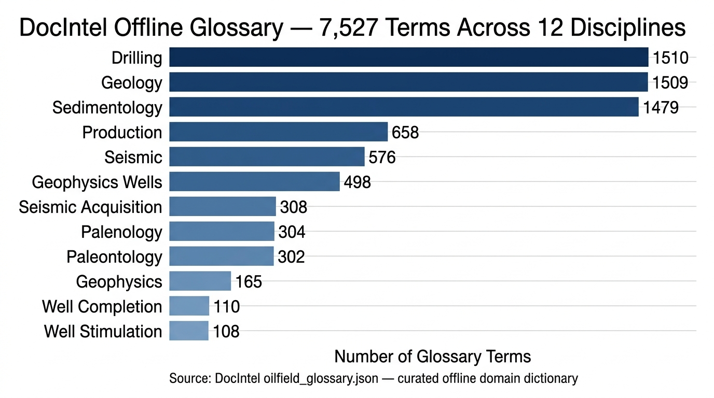

A human-in-the-loop system for explaining every technical term in a report and generating a structured plain-language document summary — powered by an offline 7,527-term domain glossary.
DocIntel is an interactive, offline document intelligence platform that helps engineers, analysts, and non-specialists understand complex technical reports. Given a PDF, DOCX, or TXT document, DocIntel automatically identifies every domain-specific technical term present in the text, retrieves its full explanation from a curated 7,527-term offline glossary spanning 12 scientific disciplines, and synthesizes a structured summary of the entire document organized by technical discipline.
Technical reports in petroleum engineering, geology, geophysics, and drilling operations are written by domain specialists for domain specialists. They are dense with jargon, acronyms, numerical parameters, and discipline-specific terminology that is completely opaque to any reader outside that narrow specialization.
Consider the following excerpt from a real well completion report:
Without deep background in well engineering, this paragraph is impenetrable. What is N-80? What is a SSSV? What does "tubing-conveyed casing guns" mean? Existing cloud-based LLM chatbots require internet connectivity, API keys, and raise data confidentiality concerns for sensitive field reports. DocIntel solves this problem by matching every term against a curated offline glossary, explaining it with full document context, and producing a plain-language summary — entirely on-device.
DocIntel transforms a raw technical report into a structured intelligence product in five stages:
| Capability | Description | Method |
|---|---|---|
| Term Explanation | Each technical term explained: definition, discipline, synonyms, sentence context from document | Glossary Lookup |
| Document Summary | Structured executive summary per discipline from the full document | NLP + Merge |
| Offline Operation | No API calls, no internet, no cloud. All computation runs locally | Offline |
| Multi-format Support | PDF, DOCX, TXT documents all parsed identically | pdfplumber / docx |
| Numerical Extraction | Depths, pressures, flow rates, densities, casing sizes extracted via regex | Regex Patterns |
| Figure Extraction | Embedded images and diagrams extracted and displayed in summary view | PIL / docx rels |
| Knowledge Graph | Interactive 2D force-directed graph of term co-occurrence relationships | Vis.js |
| Co-occurrence Heatmap | Plotly heatmap of discipline co-appearances across document chunks | Plotly |
| Export | Approved schema as YAML; all reviewer edits logged in JSON audit trail | PyYAML / JSON |
DocIntel follows a modular layered architecture. Each layer has a single clearly defined responsibility, enabling independent testing, replacement, and extension of any component without affecting the rest of the pipeline.

| Module | File | Responsibility |
|---|---|---|
| Ingestion | app/ingestion/extractor.py | PDF/DOCX/TXT text extraction; image/figure extraction; caption detection |
| Chunking | app/ingestion/chunker.py | Splits text into ~500-word partitions saved as chunks.json |
| Statistical Discovery | app/discovery/statistical.py | spaCy noun phrase extraction, TF-IDF weighting, 3-tier glossary matching |
| Direct Glossary Scan | app/discovery/llm.py | Full regex scan of document against all 7,527 glossary terms and synonyms |
| Merge Engine | app/discovery/merger.py | Combines outputs; HIGH confidence (both methods) or MEDIUM (one method) |
| Schema Manager | app/schema/manager.py | Saves approved schema YAML, edit log JSON, and merged detail records |
| UI Dashboard | app/ui/main.py | Streamlit 3-tab layout: Ingestion & Discovery, Review & Export, Glossary |
| Configuration | app/config.py | Centralised path constants and tunable defaults |

User uploads PDF, DOCX, or TXT files. pdfplumber handles PDF text extraction, python-docx handles DOCX, and native file IO reads TXT. Extracted text is normalized: trailing whitespace stripped, duplicate blank lines removed, multiple spaces collapsed. Embedded images are extracted via PIL page crop (PDF) or DOCX relationship binaries (DOCX), saved to outputs/extracted_images/. Text figure captions are detected via regex. Cleaned corpus is chunked into ~500-word segments saved as outputs/chunks.json.
statistical.py loads the spaCy en_core_web_sm model and extracts noun phrases via the dependency parser. Stopwords and punctuation are removed. A TF-IDF score is computed per phrase: TF-IDF = TF × (log((1+N)/(1+DF)) + 1), where N is total chunk count and DF is document frequency. Top-ranked phrases are matched against the 7,527-term glossary using a 3-tier strategy: (1) exact/synonym match, (2) substring match, (3) word-boundary pattern match. Minimum threshold: 2 occurrences or 2 distinct matched terms.
llm.py performs a full regex scan of the complete concatenated document text against every one of the 7,527 glossary terms and their synonyms using case-insensitive word-boundary patterns. Counts the frequency of each match. Terms appearing 2+ times, or categories with 2+ distinct matched terms, are retained. This method ensures high-recall coverage of technical vocabulary that spaCy noun-phrase extraction may miss.
merger.py combines both discovery outputs. Categories found by both methods receive HIGH confidence; single-method findings receive MEDIUM. For each category, extract_category_details() scans document chunks to retrieve: actual sentence mentions with source document reference, representative examples, observed synonyms, and numerical measurements (depths, pressures, flow rates, mud weights, casing sizes). A domain-aware summary sentence is generated per category using a curated 12-discipline template library.
An Executive Technical Synthesis paragraph is composed: primary technical domain, secondary focus areas, and proportional percentage shares of total term mentions. A per-discipline breakdown is generated for the top 4 domains. The final schema — all term explanations, summaries, examples, mentions, and measurements — is exported as outputs/approved_schema.yaml. All reviewer edits (renames, additions, removals) are recorded in outputs/edit_log.json.
The cornerstone of DocIntel's term explanation capability is data/oilfield_glossary.json — a curated structured offline knowledge base containing 7,527 technical terms across 12 scientific and engineering disciplines. Each entry provides: the canonical term name, discipline category, known synonyms, and quantitative attributes associated with that term class.
// Example entry from oilfield_glossary.json (7,527 total entries)
"gamma ray log": {
"term": "Gamma Ray Log",
"category": "Geophysics wells",
"synonyms": ["GR log", "gamma log", "GR"],
"attributes": ["API units", "Depth", "Shale volume"]
}
// Another example
"hydraulic packer": {
"term": "Hydraulic Packer",
"category": "Well completion",
"synonyms": ["packer", "permanent packer"],
"attributes": ["Setting depth", "Pressure rating", "OD"]
}
| Discipline | Term Count | % of Total | Coverage Level |
|---|---|---|---|
| Drilling | 1,510 | 20.1% | Comprehensive |
| Geology | 1,509 | 20.0% | Comprehensive |
| Sedimentology | 1,479 | 19.7% | Comprehensive |
| Production | 658 | 8.7% | Good |
| Seismic | 576 | 7.7% | Good |
| Geophysics Wells | 498 | 6.6% | Good |
| Seismic Acquisition | 308 | 4.1% | Moderate |
| Palenology | 304 | 4.0% | Moderate |
| Paleontology | 302 | 4.0% | Moderate |
| Geophysics | 165 | 2.2% | Basic |
| Well Completion | 110 | 1.5% | Basic |
| Well Stimulation | 108 | 1.4% | Basic |
| Total | 7,527 | 100% | — |
For every technical category discovered in the document, DocIntel generates a rich structured explanation card. The explanation contains the discipline category, a plain-language summary, representative term examples drawn from the document, observed synonyms, actual sentence mentions with document source references, and extracted numerical measurements.
| Tier | Strategy | Example Match |
|---|---|---|
| Tier 1 | Exact match or synonym match | "gamma ray" matches synonym "GR log" |
| Tier 2 | Substring match (glossary key appears inside extracted phrase) | "dual induction resistivity log" matches key "resistivity" |
| Tier 3 | Word-boundary pattern match (extracted phrase appears inside glossary key) | "packer" matches glossary key "hydraulic packer" |
# Generated explanation card for WellCompletion category
name: WellCompletion
confidence: HIGH
sources: [statistical, direct_scan]
details:
summary: "Downhole completion schematics detail casing strings, packers, and
assembly hardware including Production Tubing, noting specifications
such as 3,090 m packer depth and 1,850 psi tubing head pressure."
examples: [Production Tubing, Hydraulic Packer, Subsurface Safety Valve,
Production Casing, Christmas Tree]
observed_terms: [tubing string, packer, SSSV, perforation gun, casing]
numerical_attributes: ["3,445 m", "3,090 m", "150 m", "1,850 psi"]
sample_mentions:
- "Production casing (7-inch, 26 lb/ft, N-80) was set and cemented
to 3,445 m. (from Cambay_Basin_Well_Completion_Report.txt)"
- "A permanent hydraulic packer set at 3,090 m and a subsurface
safety valve installed at 150 m. (from Cambay_Basin_Well_Completion_Report.txt)"| Measurement Type | Units Captured by Regex |
|---|---|
| Depth / Length | ft, feet, m, meters |
| Pressure | psi, bar, MPa |
| Flow Rate | BOPD, MMSCFD, m3/d |
| Fluid Density / Mud Weight | ppg, g/cm3 |
| Temperature | deg F, deg C |
| API Gravity | deg API |
| Tubular Dimensions | inch, in., fractional (e.g. 3-1/2 inch) |
After term discovery and explanation, DocIntel synthesizes an Executive Technical Synthesis — a plain-language summary explaining what the uploaded document is about, organized by technical discipline. This is the primary output that enables any reader to understand a complex technical report without domain expertise.
DocIntel is explicitly a human-in-the-loop system. Automated discovery produces candidate term explanations, but the domain expert retains full editorial control over what appears in the final summary. The review workspace is organized into three focused sub-tabs to avoid information overload:
| Sub-tab | Purpose | User Actions Available |
|---|---|---|
| Category Review & Approval | Inspect each discovered term category individually | Approve/reject, rename, edit description, add custom categories, edit examples and observed terms |
| Executive Synthesis & Analytics | View the auto-generated document summary and visual analytics | Read domain breakdown, view co-occurrence heatmap, explore knowledge graph, inspect extracted figures |
| Schema Approval & Downloads | Finalize and export the reviewed schema | Approve schema, download YAML, download edit log JSON, download discovery input JSON |
{
"added": ["Contractor", "SafetyHSE"],
"removed": ["Palenology"],
"renamed": { "GeophysicsWells": "WellLogging" }
}DocIntel computes a symmetric co-occurrence matrix between discovered categories. For each ~500-word document chunk, it checks which categories have term matches, then increments the co-occurrence count for every co-present pair. The matrix is rendered as an interactive Plotly heatmap where color intensity shows how frequently two disciplines appear together in the same document segment. This reveals document structure: are drilling and completion terms always co-present? Are geological descriptions isolated from production terminology?
Co-occurrence data is rendered as an interactive force-directed network graph using Vis.js. Nodes represent discovered technical categories (sized proportionally by total term mention count). Edges represent co-occurrence relationships (weighted by co-occurrence frequency). The ForceAtlas2 physics engine clusters nodes by structural affinity. Users can drag, zoom, and hover nodes to inspect statistics — giving rapid visual intuition of which domains dominate, which are peripheral, and which are structurally interconnected.
| File | Format | Contents |
|---|---|---|
outputs/chunks.json | JSON | Array of ~500-word text chunk objects with doc_id, chunk_index, and text fields |
outputs/schema_discovery_input.json | JSON | Representative sample chunks submitted to the direct scan (audit trail) |
outputs/candidate_schema.yaml | YAML | Pre-review merged categories with confidence and source provenance |
outputs/approved_schema.yaml | YAML | Final human-approved categories with full term explanations, examples, mentions, and measurements |
outputs/edit_log.json | JSON | Complete audit log of all reviewer edits: added, removed, and renamed categories |
outputs/extracted_images/ | PNG/JPG | Embedded figures and diagrams extracted from the uploaded documents |
outputs/captions.json | JSON | Text figure captions detected in the documents via regex pattern matching |
# Approved schema YAML structure (outputs/approved_schema.yaml)
document_summary: "The analyzed corpus encompasses 5 approved categories with
312 term occurrences. Primary domain: WellCompletion (128 mentions, 41.0%)..."
categories:
- name: WellCompletion
confidence: HIGH
sources: [statistical, direct_scan]
description: "Downhole tubulars, production casing, perforations..."
details:
summary: "Completion schematics detail casing strings and packers..."
examples: [Production Tubing, Hydraulic Packer, SSSV]
observed_terms: [tubing string, packer, casing gun]
numerical_attributes: ["3,445 m", "3,090 m", "1,850 psi"]
sample_mentions:
- "Production casing (7-inch, 26 lb/ft, N-80) was cemented to 3,445 m.
(from Cambay_Basin_Well_Completion_Report.txt)"| Library / Tool | Version | Purpose |
|---|---|---|
| Python | 3.11+ | Core language runtime |
| Streamlit | ≥1.30.0 | Interactive web UI dashboard with 3-tab, 3-subtab layout |
| spaCy | ≥3.7.0 + en_core_web_sm | Noun phrase extraction via dependency parser |
| pdfplumber | ≥0.10.0 | PDF text and image/figure extraction |
| python-docx | ≥1.1.0 | DOCX text and embedded image extraction |
| PyYAML | ≥6.0.0 | YAML schema serialization and reading |
| Plotly | via Streamlit | Interactive co-occurrence heatmap visualization |
| Vis.js | 4.21.0 CDN | Force-directed 2D knowledge graph visualization |
| pytest | ≥7.0.0 | Automated unit testing suite |
| python-dotenv | ≥1.0.0 | Environment variable management |
| File | Lines of Code | Purpose |
|---|---|---|
app/ui/main.py | 883 | Full Streamlit UI: tabs, sub-tabs, KPIs, visualizations |
app/discovery/llm.py | 336 | Direct glossary scan, term explanation, 12-discipline summary templates |
app/discovery/statistical.py | 187 | spaCy NLP, TF-IDF scoring, 3-tier glossary matching |
app/ingestion/extractor.py | 176 | PDF/DOCX/TXT text and image extraction |
tests/test_discovery.py | 130 | 6 unit tests: merge, TF-IDF, details, numerical extraction |
app/schema/manager.py | 80 | Schema saving, edit log, detail merging |
app/discovery/merger.py | 60 | Hybrid merge logic and confidence assignment |
app/ingestion/chunker.py | 40 | 500-word text chunking logic |
app/config.py | 25 | Path constants, tunable defaults |
DocIntel ships with an automated test suite covering all core functional components. All 8 tests pass cleanly on Python 3.14.5 with pytest 9.1.1.
============================= test session starts =============================
platform win32 -- Python 3.14.5, pytest-9.1.1, pluggy-1.6.0
rootdir: C:\...\docintel
collected 8 items
tests\test_discovery.py ...... [ 75%]
tests\test_ingestion.py .. [100%]
============================== 8 passed in 4.45s ==============================| Test Function | What It Validates | Result |
|---|---|---|
test_merge_discovered_categories | HIGH/MEDIUM confidence assignment; source provenance (statistical vs direct_scan) | PASS |
test_extract_noun_phrases | spaCy noun phrase extraction correctness ("mud motor" extracted correctly) | PASS |
test_merge_details | Detail merging: deduplication of examples and observed_terms lists | PASS |
test_save_approved_schema_with_details | YAML export structure and nested details embedding verified | PASS |
test_tfidf_statistical_discovery | TF-IDF scoring and glossary matching end-to-end pipeline | PASS |
test_extract_category_details_numerical_attributes | Numerical regex extraction: depths (ft), mud weight (ppg), pressure (psi) | PASS |
test_extract_text (PDF + DOCX) | PDF and DOCX text extraction correctness via pdfplumber and python-docx | PASS |
| Current Limitation | Notes |
|---|---|
| Domain scope | Glossary covers petroleum engineering and geoscience. Other industries (pharma, aerospace, legal) are not covered. |
| Language | English only. Non-English technical reports are not supported. |
| Scanned PDFs | Image-only PDFs without an OCR text layer cannot be processed — OCR integration is not yet included. |
| Glossary coverage balance | Well Completion (110 terms) and Well Stimulation (108 terms) have significantly less coverage than Drilling (1,510) and Geology (1,509). |
| Entity instances | Identifies term categories and explains them; does not extract specific entity instances (individual well names, reservoir depths). |
| Summary granularity | Summary is organized at the discipline-category level; sub-topic granularity within a discipline is not yet generated. |